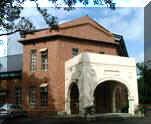

呂清夫 撰文

在台灣，母校一詞往往是抽象的，也就是說，當你畢業多年返校的時候，常會發現，不但人事全非，景物也一點都不依舊，我們常常找不到當年充滿回憶的校舍，於是只能從照片中去尋覓。由於法規的不周延，使得我們的古校舍無法免於被包商覬覦的危險，他們會千方百計，尋找改建、重建、新建的機會，這再加上校長在施工中還有正式的監工酬勞，所以古校舍每每就此一一遭殃，筆者念過的中、小學莫不如此。如果碰到校長是空降的人士，對於校舍未必有深厚的感情，更可能說拆就拆，令人惋惜。不過最近碰到了一點例外。假日路過士林國小，頗受其圍牆的清新所吸引，那是使用瓷磚拼貼而成的各種校園畫面，顏色鮮麗而不俗膩，造形活潑而富於童趣，可說是過去小學圍牆少見的畫面，過去常見的是叫兒童用油漆密密麻麻地圖滿牆壁，造成不少的視覺污染，都市如有噪音的話，那是另外添增了噪形、噪色，主要是因為沒有經過更周密的計畫，便有點隨興地叫廉價的童工匆忙上色之故。士林國小的壁畫就無法如此隨興，因為瓷磚如未經過周密計畫便無法拼貼，同時貼上以後也難以像油漆那樣重塗，所以必須謀定而後動，但也更具永久性。看了那些圍牆之後再抬頭一看，又見到一棟十分雅緻的五角形建築物，我於是跟警衛說讓我進去參觀一下，看了之後才發現這是一所百年老校，也保留了不少古建築，五角形建築即為古建築之一，它是在四角形結構中特別切掉一角，並在此處設置門廊，門廊又對準了馬路的轉角，可以說是一個「好望角」，因為它可以方便師生在此進出，而不僅是側門而已。這種角落一般都僅被處理成不被注意、無可利用的建築一角而已，但士林國小的這棟建築可謂匠心獨運，紅色的角樓配上純白的門廊，真是美極的校園景觀。不僅如此，這棟角樓旁邊還保留了一整排得蒼天古樹，濃蔭蔽日，充滿詩意。這使我們想起了「畢業歌」中的「青青校樹，淒淒庭草」中的意象。如果校園都被水泥覆蓋得一毛不拔，說實在不僅乏味，同時也沒什麼可以回憶的因子了。但士林國小不但有青青校樹，另外還可看到其他古蹟，例如它的圖書館也是古建築，建築不高，但佔地不小，覆以兩大片斜屋頂，周圍繞以拱形迴廊，猛然一看還以為是一座教堂，廊外則有寬敞的球場。門前則有一個古老的石造入口，上面刻著「八芝蘭公學校」。在這樣的校園中成長的學子，應該比較可能有歷史感與大格局。目前官方所謂教育改革往往偏向考試技術的改進，其實政府辦教育如有經濟概念，不妨把學校畢業生當成教育「產品」看待，畢業生是否有智慧、有公德心、有氣質應是檢驗這種「產品」好壞的標竿。唯有好的教育「產品」，我們的社會才會更和諧、更可愛，這是教育的目的，教育並不是為了訓練會考試的兵丁。雖然我們的施政一向財經掛帥，但是對於學校經營，就幾乎不是如此。將來真正教育自由化以後。我們不但要比較哪個學校、哪個城市、哪個地區的教育「產品」更有氣質，我們也要比較哪個校園更有品味，爛挖濫建、每一寸土地都蓋滿建築物的校園或將絕跡。